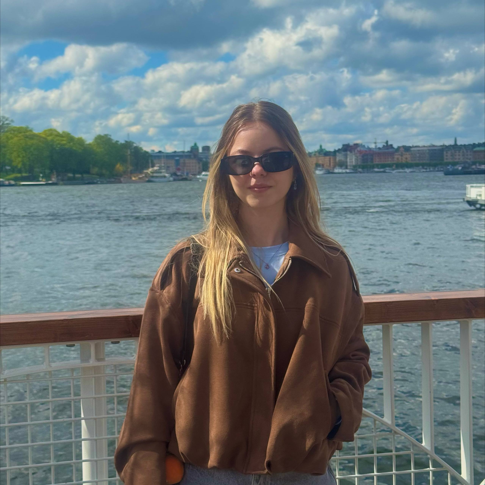
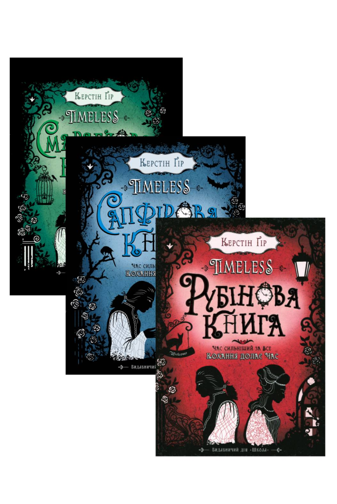
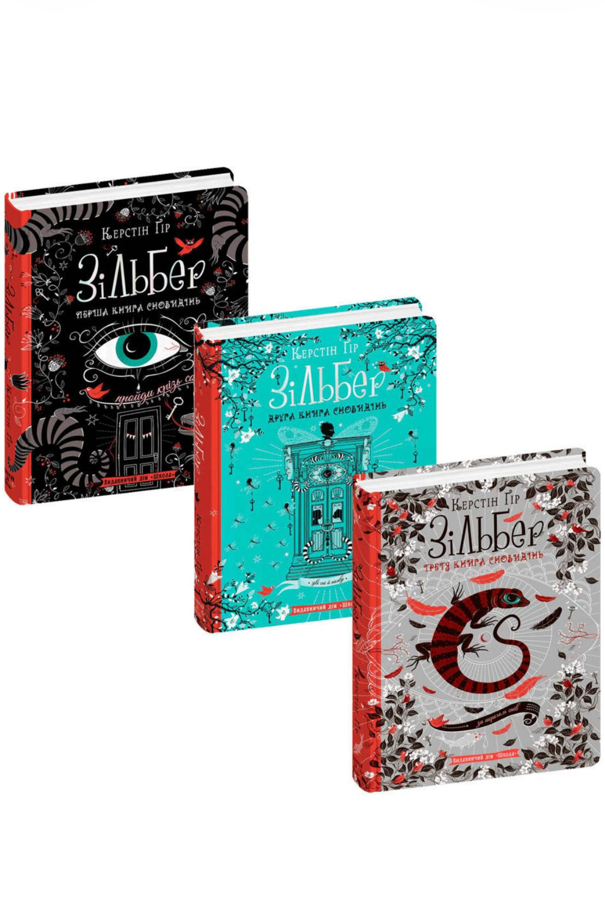
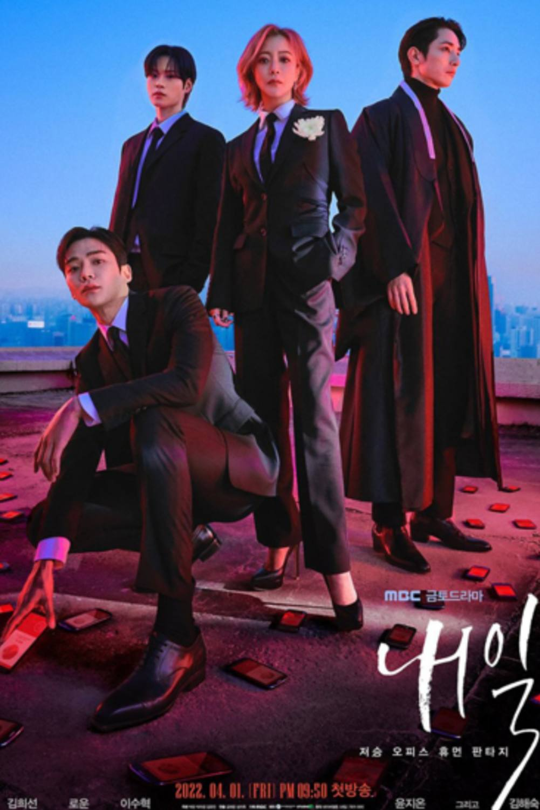
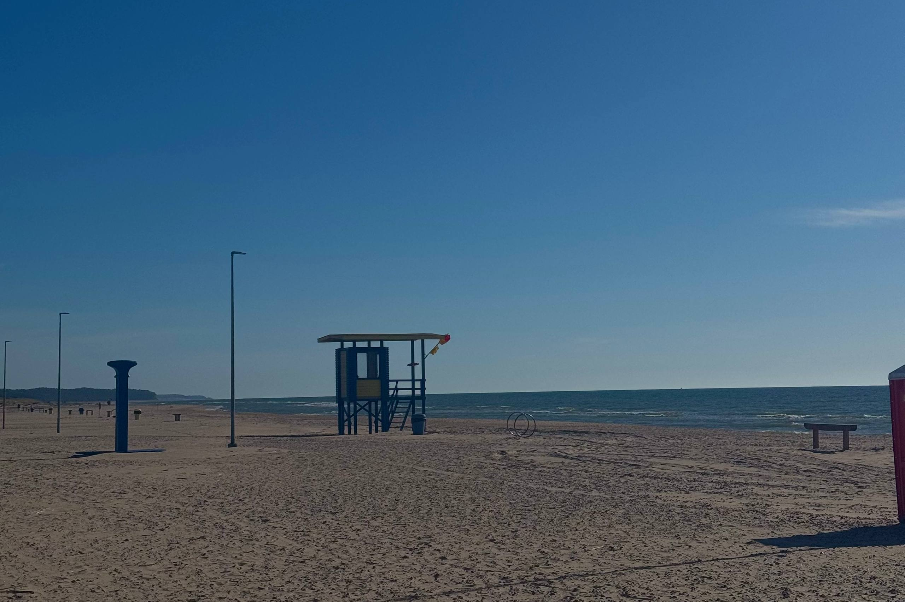
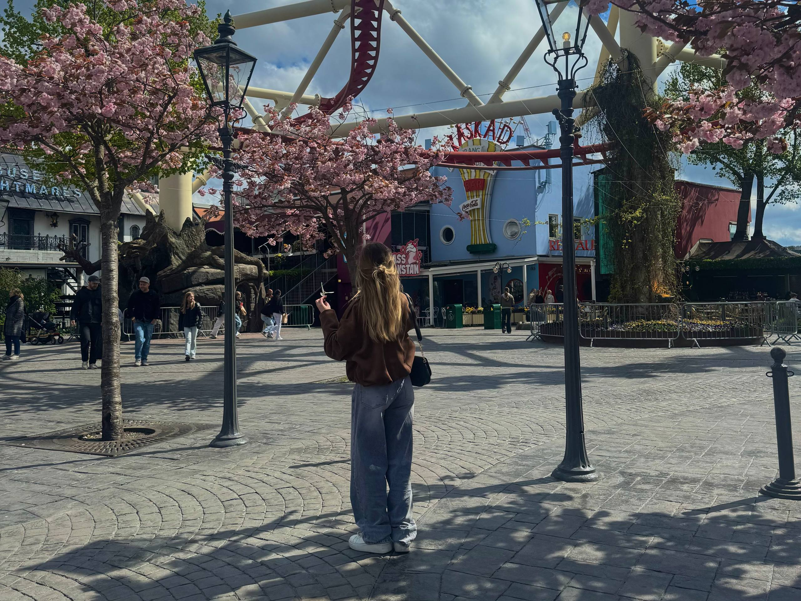
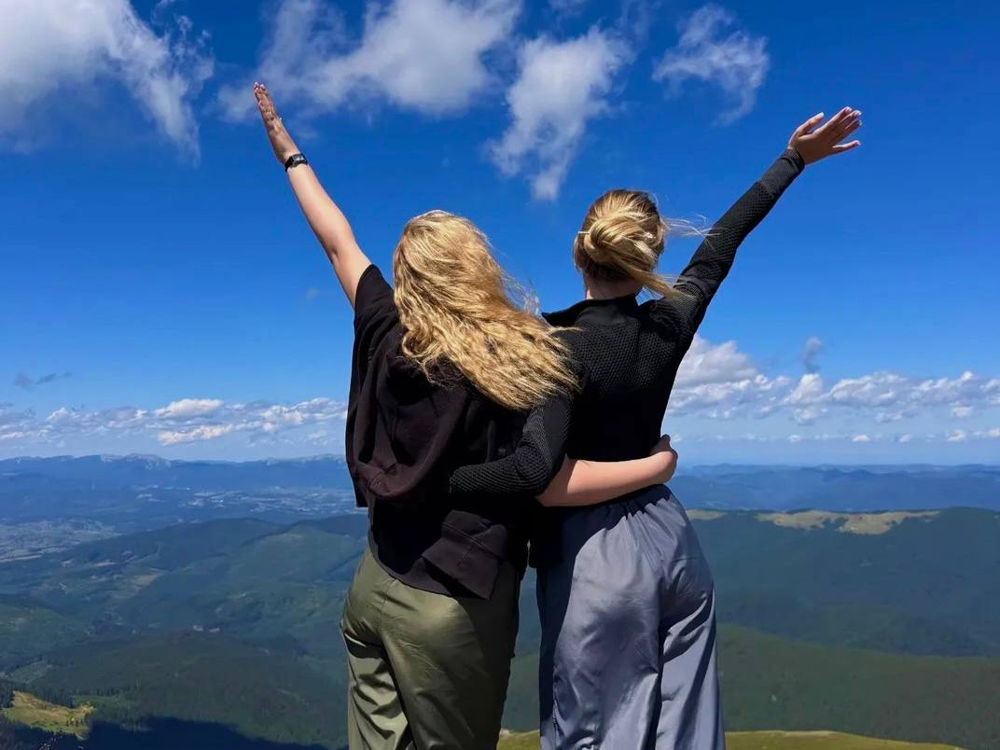
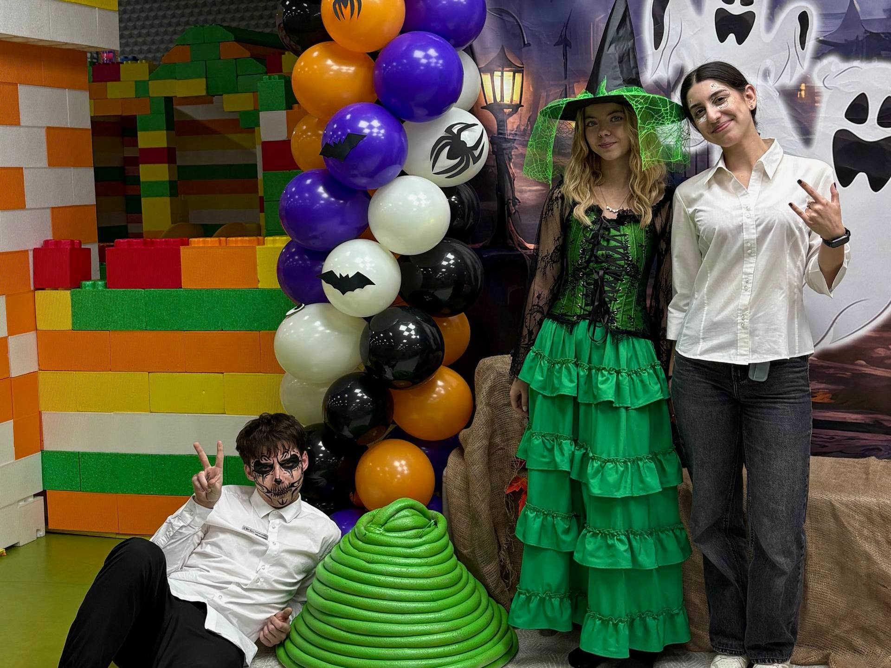
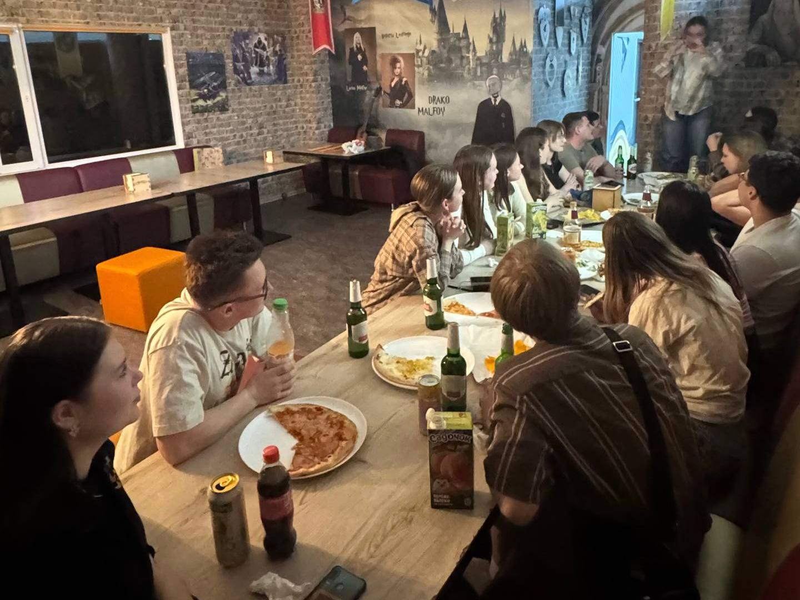

🏸Бадмінтон
Чудовий спосіб розвантажити мозок після навчання та динамічно провести час.

Студентка 3-го курсу спеціальності «Прикладна математика». Поєдную любов до точних наук із творчими захопленнями, вивчаю веб-розробку та завжди відкрита до нового досвіду.
Місто: Львів
Email: elyzaveta.43276@gmail.com
Заклад: Середня загальноосвітня школа №46 м. Львова
Місто: Львів
Шкільні роки запам’яталися гарною атмосферою та тим, що я дуже любила брати участь у різноманітних олімпіадах — часто просто «по приколу» та задля цікавого азарту, перевірки власних сил чи абітурієнтського вайбу.
Університет: Львівський національний університет імені Івана Франка
Спеціальність: Прикладна математика
Курс: 3 курс
Чудовий спосіб розвантажити мозок після навчання та динамічно провести час.
Люблю розмальовувати складні антистрес-розмальовки — це дуже заспокоює та надихає.
Захоплююся іграми з гарним сюжетом та атмосферою, де можна відпочити у вільний час.
| Обкладинка | Назва | Автор | Враження |
|---|---|---|---|
 |
Серія «Таймлесс» | Керстін Гір | Захоплива трилогія про подорожі в часі, інтриги та таємниці минулого. |
 |
Трилогія «Зільбер» | Керстін Гір | Неймовірна історія про таємничий світ снів, де двері ведуть у чужі сновидіння. |
Музику слухаю постійно. Головне місце в моєму плейлисті ще з 8 класу займає K-pop гурт BTS.
🎧 Переслухати мій плейлист у YouTube MusicЖанр: Історична романтика, драма
Неймовірно зворушлива та емоційна історія про дівчину з сьогодення, яка потрапила в епоху Корьо. Неймовірний сюжет і сильна драма.
Жанр: Фентезі, романтика
Дивовижний вигаданий світ, де магія поєднується з бойовими мистецтвами. Дуже гарна візуальна частина та сюжетні повороти.
Жанр: Романтика, комедія
Дорама, яку я дивилася нещодавно, і вона мені ну ДУЖЕ сподобалася! Легка, але водночас зачіпає за живе.

Жанр: Містика, драма (без романтики)
Дуже глибока та сильна серія про команду женців смерті, які рятують людей від розчарувань. Важливі життєві теми без фокусу на романтиці.
Обираю активності для душі та гарного самопочуття:



Наразі я працюю у Дитячому розважальному центрі «Країна мрій» (не аніматором). Це додає досвіду спілкування, організованості та позитивних емоцій.


«Краще ризикнути й спробувати, аніж так і не наважитися, а потім усе життя шкодувати про згаянну можливість.»
«Сім разів відміряй — один раз відріж.»